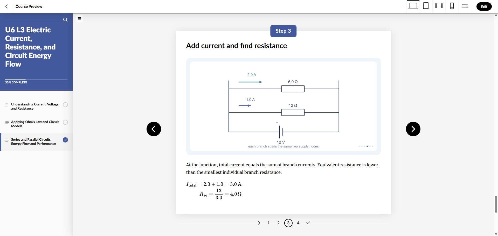

Unit 6 native Rise worked examples
16 verified Process blocks: 4 revised existing walkthroughs and 12 additions. Each has an introduction, four illustrated instructional steps with native LaTeX equations, and a summary. There are 96 diagram uploads and 64 equation objects.
| Location | Worked example | Change |
|---|
| U6 L1, section 1 | Worked example: Count transferred electrons | Added at section end |
| U6 L1, section 2 | Worked example: Calculate and scale an electric force | Revised existing block |
| U6 L1, section 3 | Worked example: Add forces on the middle charge | Revised existing block |
| U6 L1, section 3 | Worked example: Compare electric force with gravity | Added at section end |
| U6 L2, section 1 | Worked example: Find a field and a charge’s force | Added at section end |
| U6 L2, section 2 | Worked example: Connect voltage, field, and work | Added at section end |
| U6 L3, section 1 | Worked example: Turn charge flow into current | Added at section end |
| U6 L3, section 2 | Worked example: Find an unknown resistance | Revised existing block |
| U6 L3, section 2 | Worked example: Read resistance from a graph | Revised existing block |
| U6 L3, section 3 | Worked example: Solve a series circuit | Added at section end |
| U6 L3, section 3 | Worked example: Solve a parallel circuit | Added at section end |
| U6 L3, section 3 | Worked example: Calculate circuit energy use | Added at section end |
| U6 L4, section 3 | Worked example: Analyze repeated electromagnet trials | Added at section end |
| U6 L4, section 3 | Worked example: Choose the best-value electromagnet | Added at section end |
| U6 L5, section 1 | Worked example: Calculate an induced voltage | Added at section end |
| U6 L5, section 2 | Worked example: Track energy through a generator and motor | Added at section end |
Related question corrections
- Two charges of +2 μC and −3 μC at 0.50 m: correct force magnitude is approximately 0.216 N.
- Both charge magnitudes doubled and separation halved: force increases by a factor of 16.
- The stated three-charge problem: correct net force on the middle charge is approximately 0.0225 N to the right.
All three saved answer keys and their feedback were checked. Changes are saved in Rise authoring; no separate publishing action was taken.
Learner preview

Local source: process-blocks.json, build_content.py, build_art.py, and render-art.cjs. Verification: saved-verification.json and calculation-checks.json.